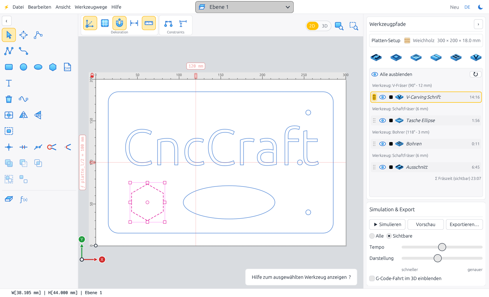

Hilfslinien am Lineal Neu in CncCraft
Rote Hilfslinien quer über das Werkstück, an denen Formen einrasten und hängen bleiben – mit Maß, Formel und Sperre.
Hilfslinien kennt die Vorlage Spark ähnlich; in CncCraft sind sie zusätzlich ein weicher Constraint: Formen, die Sie an eine Linie ziehen, bleiben an ihr hängen und wandern mit, wenn die Linie sich bewegt – etwa weil sich eine Variable ändert.

Lineale ein- und ausschalten
Der Knopf mit dem Lineal in der Kopfleiste (Gruppe „Dekoration“) zeigt die Lineale am oberen und linken Plattenrand. Hilfslinien gibt es nur bei eingeschalteten Linealen.
Hilfslinie anlegen
- Ein Klick ins obere Lineal legt an dieser Stelle eine senkrechte Linie an, ein Klick ins linke Lineal eine waagrechte.
- Sie können auch im Lineal drücken und ziehen: Die neue Linie folgt der Maus, bis Sie loslassen.
Verschieben – nur am Lineal
Jede Linie hat im Lineal einen roten Griff. Nur dort lässt sie sich ziehen; über dem Griff zeigt der Zeiger einen Doppelpfeil. In der Zeichnung selbst reagieren Hilfslinien nicht – sie stören beim Zeichnen also nie. Beim Ziehen landet die Linie immer auf ganzen Millimetern.
Der genaue Abstand
Außerhalb des Lineals steht der Abstand der Linie vom linken bzw. unteren Plattenrand – im selben Schild wie die Werte der Abstände. Über der Zahl zeigt der Zeiger eine Hand: Lange drücken öffnet sie zum Eintippen. Wie in jedem Maßfeld sind Kommazahlen, Variablen und Formeln erlaubt; eine Formel bleibt erhalten („ƒ platte_l/2 = 100 mm“), und die Linie folgt, wenn sich die Variable oder die Plattengröße ändert. Ziehen Sie eine Formel-Linie am Griff, wird sie wieder zu einer festen Zahl.
Formen einrasten lassen
Ziehen Sie eine Form so nahe an eine Hilfslinie, dass ihre linke, rechte, obere oder untere Kante oder ihre Mitte die Linie fast berührt, färbt sich die Form rot und die Linie wird dicker: Lassen Sie jetzt los, rastet die Form genau ein.
- Die eingerastete Form hängt an der Linie: Verschieben Sie die Linie, ändern Sie ihre Zahl oder ihre Formel, wandert die Form mit – und mit ihr die Werkzeugwege.
- Ziehen Sie die Form selbst wieder weg, löst sie sich von der Linie. Darum ist es ein weicher Constraint.
- Einrasten geschieht nur, wenn Sie eine Form an eine Linie ziehen. Schieben Sie eine Linie über eine ruhende Form, hängt diese nicht an.
Auswählen und löschen
Ein Klick auf den Griff wählt die Linie aus (sie wird kräftiger), Entf löscht sie. Die Formen, die an ihr hingen, bleiben wo sie sind.
Hilfslinien sperren
In der Ecke, in der sich die Lineale treffen, sitzt ein Schloss. Ein Klick sperrt alle Hilfslinien; eine kurze Meldung bestätigt es. Gesperrte Linien werden dünn und halb durchsichtig, lassen sich nicht mehr anlegen, verschieben, bearbeiten oder löschen – Formen rasten aber weiter an ihnen ein. Ein weiterer Klick entsperrt sie.


Rückgängig
Anlegen, Verschieben (ein ganzer Zug ist ein Schritt), Zahl ändern und Löschen lassen sich mit ⌘Z rückgängig machen; angehängte Formen gehen dabei mit zurück. Hilfslinien und die Sperre werden mit dem Projekt gespeichert.